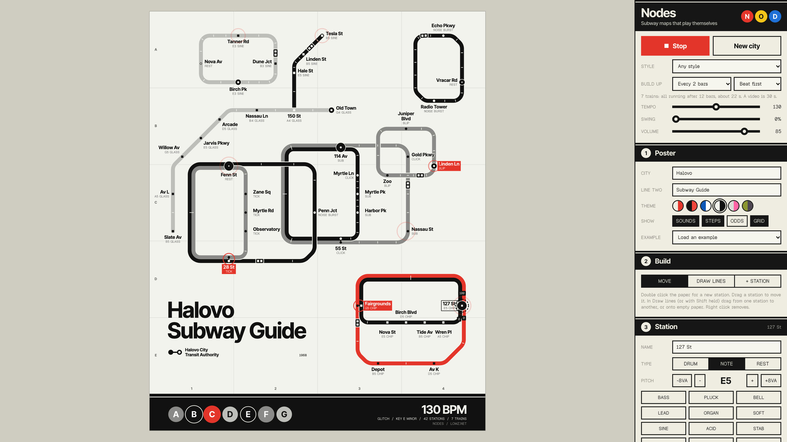
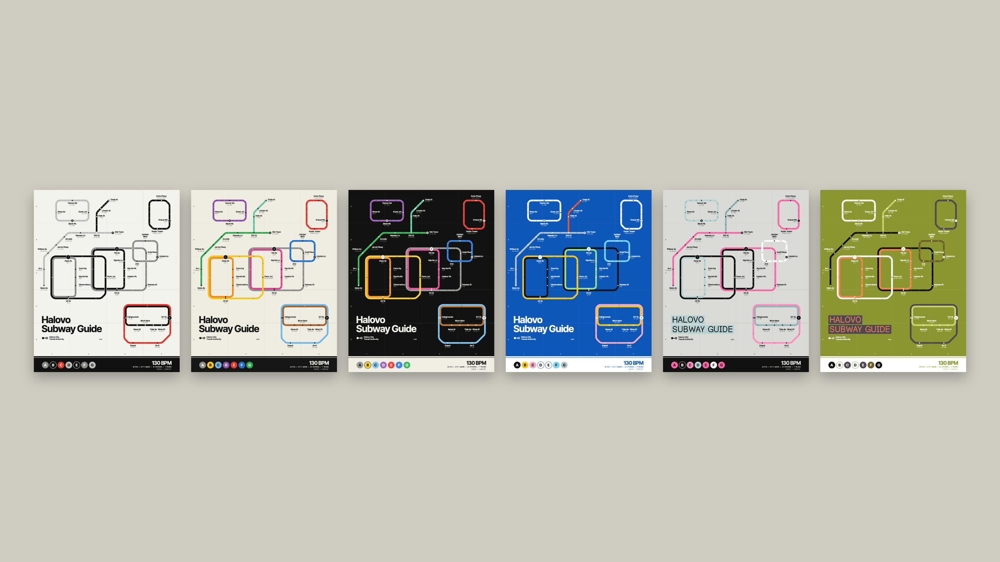
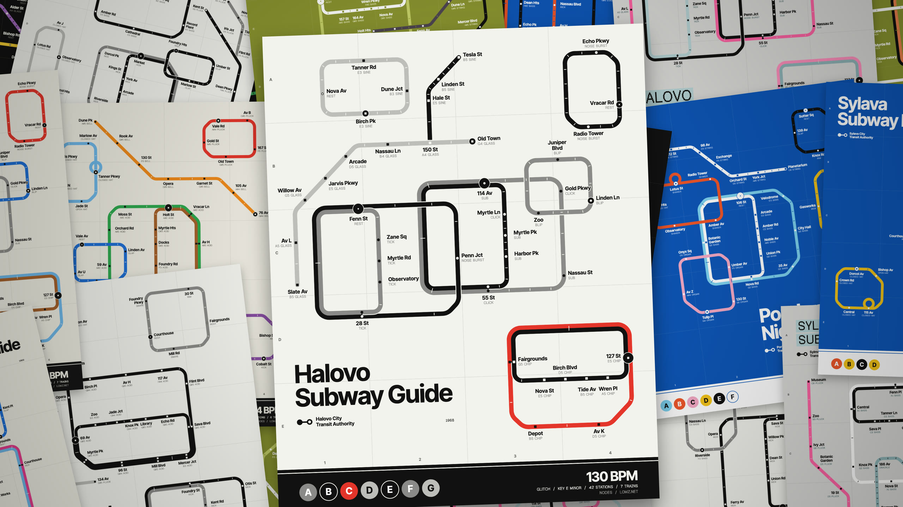
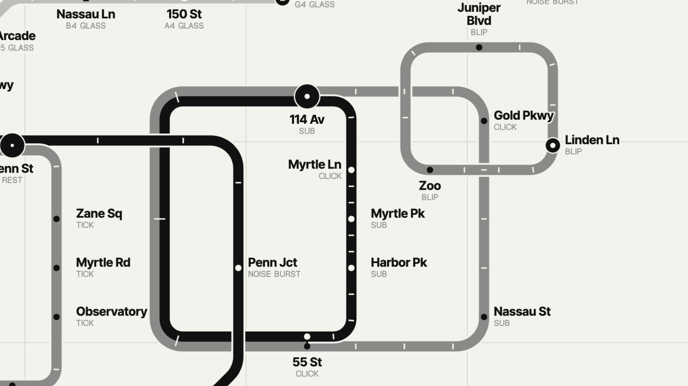
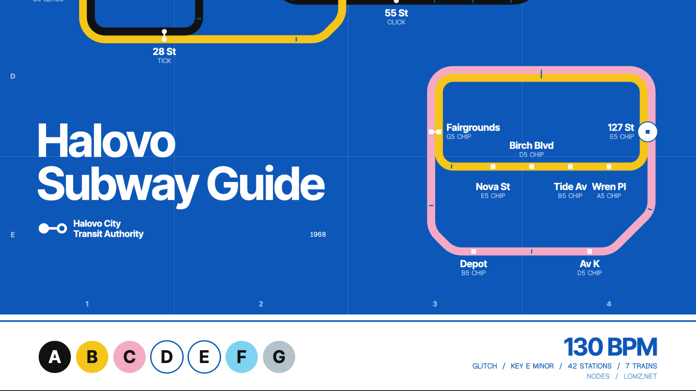
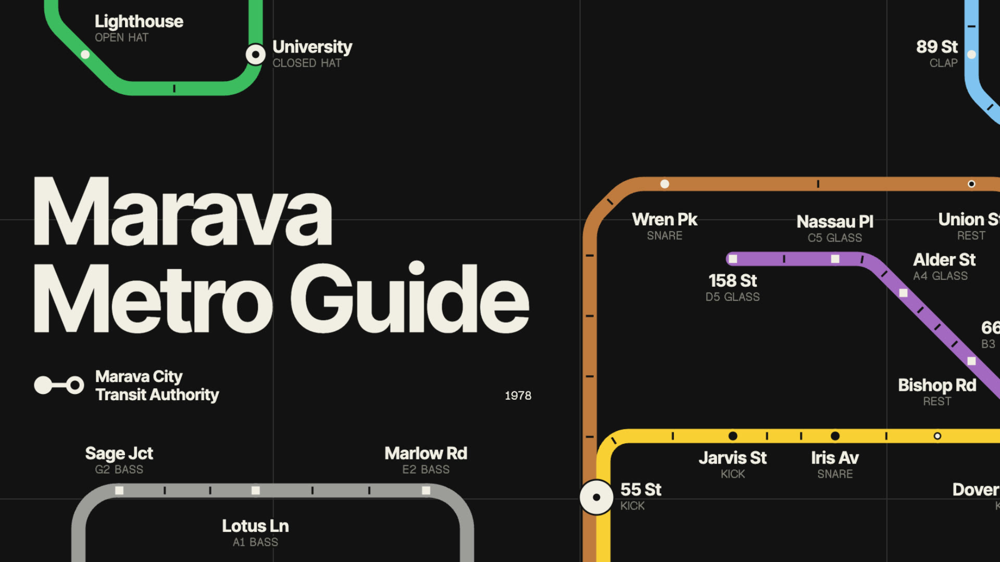
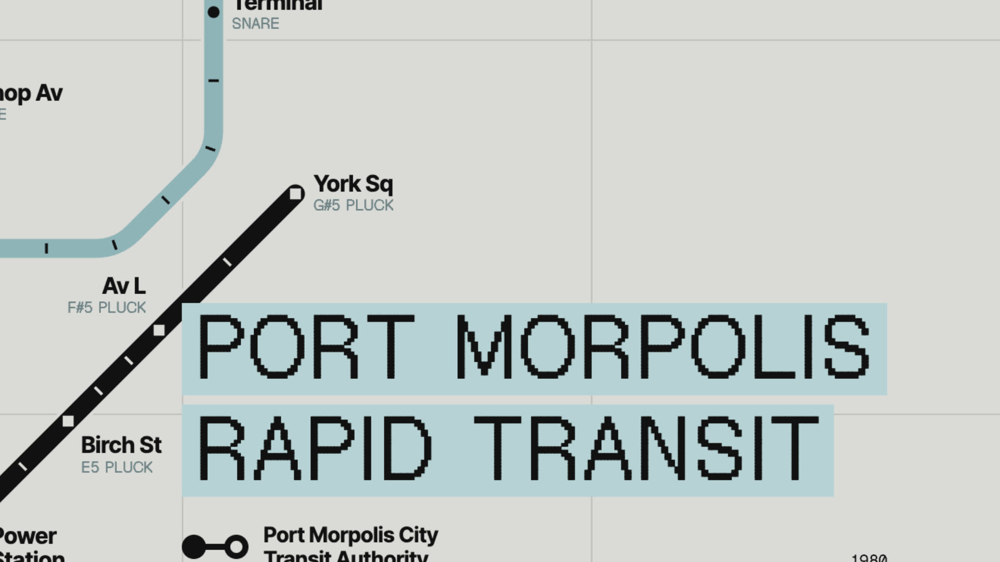
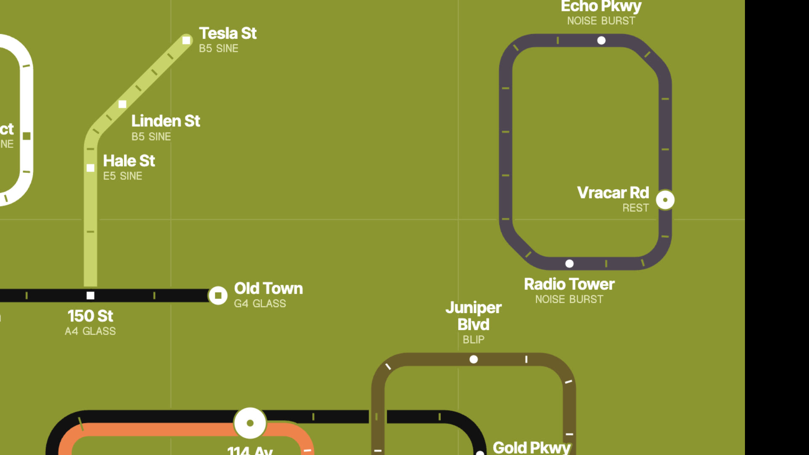
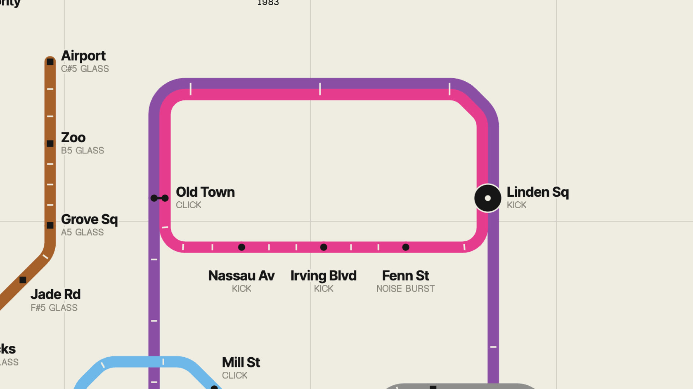

Metro Map
A subway map that plays itself. Every station is a sound, every line is a loop, and the trains are the music. At every junction chance picks where a train goes next, so the same map never plays quite the same way twice.
Hit “New city” for a fresh map, or build your own: drop stations, draw lines between them and give each one a drum or a note. Pick a style, tempo and swing, and let the trains join one by one so the track builds up.
When it sounds right, save the poster as an image or record a 30 second video. The whole map is also plain text, so you can copy it, change it and share it as a link.








